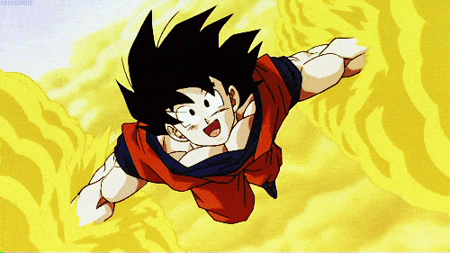

| 主题：七龙珠 | 当前：孙悟空介绍 | 返回吕敬锋的主页 |
|  |
孙悟空，原名卡卡罗特，是贝吉塔行星仅剩的几个赛亚人之一 。因为一次意外被送到地球后由孙悟饭收养，他躲过了贝吉塔行星的毁灭并在地球上成长。孙悟空性格善良、勇敢，极具正义感，对战斗充满热情 。他从一名平凡的武道家逐渐成长为宇宙级战士，在面对各种邪恶势力时总是冲在前面，保护地球和宇宙 。
孙悟空，作为武道天才，不仅积累了丰富的战斗经验，还掌握了众多强大的招式，如舞空术、太阳拳和龟派气功等。然而，在众多招式中，他最为人称道的是在与弗利萨的决战中所展现的传说中的超级赛亚人变身。